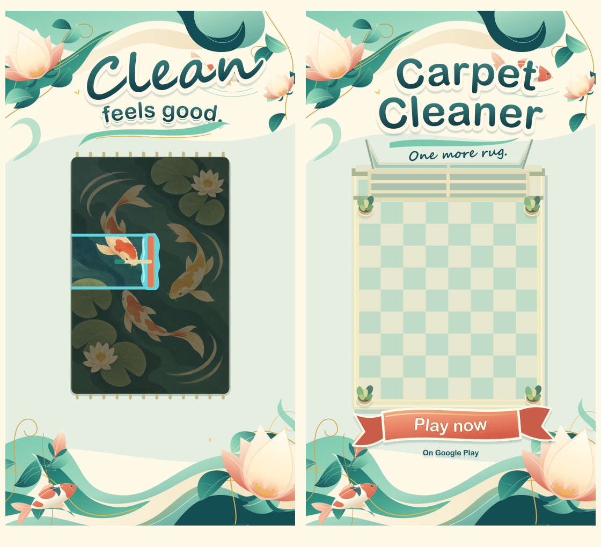
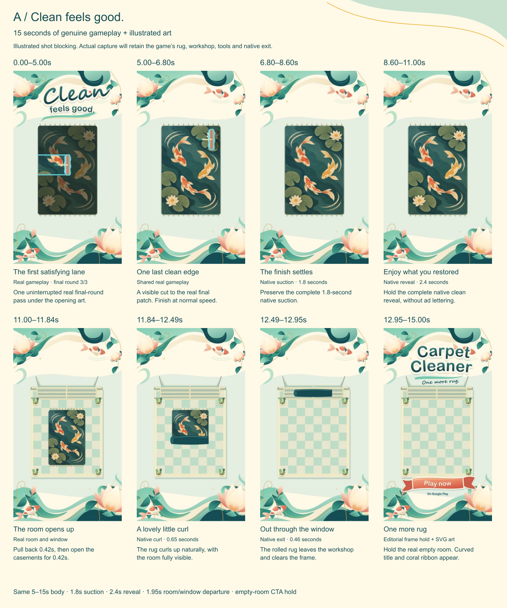
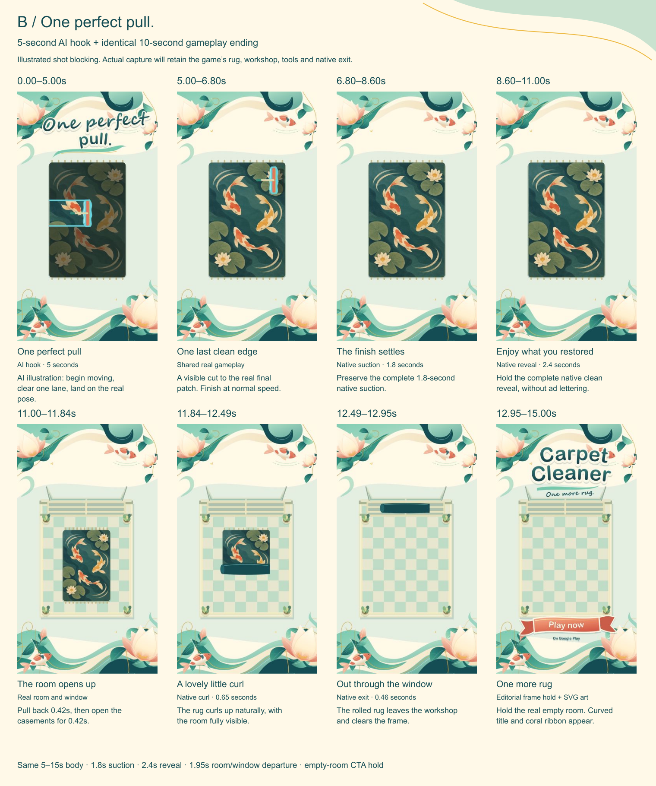

Clean feels good.
A little garden of calm.
Beautiful botanical vector art, one soothing cleaning gesture, then a room-sized reward: the finished rug curls and glides out through the window.
A: 15 seconds of real gameplay. B: a five-second AI illustrated hook followed by the same ten-second gameplay body. Both end with the real workshop, the rug gone, and an illustrated invitation to play.
Production update: The finished gameplay edits are ready: a 15-second ad and a 10-second body for the AI version, plus 36 individual vector/PNG art layers. Current paid jobs use brushes, so the produced cut uses real brush cleaning and the full native room exit. The AI hook remains excluded. The wet-shot plan below is retained as the original concept; production notes record the final footage and timing.
Curves, flowers, and a graceful finish.

Sculpt mint and jade water into broad S-curves. Build asymmetric lotus flowers from layered, curved petals; let leaves curl around fine gold vines. Rounded lettering has a soft outlined edge, script accents and drawn swash underlines. The coral CTA is a folded ribbon with curved tails, integrated into the garden illustration.
Keep this artwork at the upper and lower edges. Leave the actual tool contact, restored lane, native reveal and window passage clear. The complete rug print stays stationary during cleaning; its existing koi and lotus are printed artwork, not animated creatures.
Motion: a slow 2–4° botanical sway, one drawn vine crest, and a gentle ribbon unfurl. The optional opening caption fades after the first gesture. All decorative lettering clears for the 2.4-second clean reveal. Ending lettering appears only after the rug exits, over the held empty room.
The editable SVG text masters accompany portable outlined display artwork. The game’s rug is an existing raster texture in an illustrated style; the new surrounding artwork is vector. These boards are concept compositions, not newly captured gameplay or an AI motion clip.
A perfect pass. A room that breathes.

| Ad time | Picture & action | Art & sound |
|---|---|---|
| 0–5.00 s | One unbroken lane. Real normal-speed, normal-tool-power squeegee action in final round 3/3. Start in contact and in motion; reveal a clear koi/lotus strip with a visible blue water ridge. | “Clean feels good” in curved lettering at the top edge. Lotus and vine accents frame the pass. One soft wet swish; caption clears early. |
| 5.00–6.80 s | Visible cut to the final patch. The same rug and round, with a genuine small patch completed through ordinary gameplay. This is the shared body's first frame. | No caption. The slightly changed composition makes the time cut legible. Tool pace stays natural. |
| 6.80–8.60 s | Full native suction. Preserve the complete 1.8-second phase. | Clear view of the surface; soft suction foley if sourced. |
| 8.60–11.00 s | Full native clean reveal. Hold the entire 2.4-second authored reward. | Existing completion cue once, aligned to its game event. Native UI and rug art unobstructed. |
| 11.00–11.42 s | Native pullback. The close rug view opens into the whole workshop. | Keep surrounding plants, floor and window readable. A small musical breath. |
| 11.42–11.84 s | Native casement opening. The hinged window opens in the real room. | Window and passage stay completely clear of graphics. |
| 11.84–12.49 s | Native curl. The clean rug curls in the room before departing. | Keep the rug silhouette visible; no added caption. |
| 12.49–12.95 s | Native exit. The rug glides through the window and goes out of frame. | Use the full passage. A gentle editorial air sound may accompany the actual movement. |
| 12.95–15.00 s | Empty-room editorial hold. Hold a real frame after the rug clears the window. | Curved “Carpet Cleaner” title, lotus flourish and “Play now” coral ribbon arrive. Music resolves softly. |
The native exit passage from pullback to departure takes 1.95 seconds. The later 0.42-second camera return belongs after this source cut; window closing and the next arrival are also outside the ad. No engine timing is changed.
One perfect pull into the game.

| Ad time | Picture & action | Art & sound |
|---|---|---|
| 0–0.40 s | Already moving. A vertical coral blade touches the wet rug and immediately exposes a thin clear line. Illustrated framing follows the authentic rug design. | Optional “One perfect pull” in soft script, nested in curling foliage at the upper edge. Continuous swish starts immediately. |
| 0.40–3.80 s | One continuous pull. The blade slides left to right. A modest water ridge gathers ahead; crisp printed koi and petals appear behind. Surrounding rug remains unfinished. | Botanical edges sway slightly. Water curves echo the real cleaning boundary. The rug print remains still. |
| 3.80–5.00 s | Settle to the real final-patch frame. Match the selected gameplay frame's camera, crop, tool pose, water boundary and motion at 5.00 seconds. | Caption disappears. Camera settles without warping or a flash. Swish bridges the join. |
| 5.00–6.80 s | Same real final patch as A. Identical in-point, crop, speed and completion trigger. | Native HUD; body audio identical after the brief join bridge. |
| 6.80–8.60 s | Same full native suction. 1.8 seconds. | Unobstructed surface and matching audio. |
| 8.60–11.00 s | Same full native clean reveal. 2.4 seconds. | No decorative lettering over the reward. |
| 11.00–12.95 s | Same native room departure. Pullback to 11.42; casement opens to 11.84; curl to 12.49; window exit to 12.95. | Same source footage; keep the room, window and rug passage clear. |
| 12.95–15.00 s | Same empty-room hold. Rug fully out of frame. | Identical illustrated title, folded CTA ribbon and sound ending. |
Beautiful motion, anchored to one real frame.
Lock A's shared body first. Extract its first final-patch frame as capture/handoff_05s.png; this is B's landing target. Supply the true Stillwater Pond texture, current wet references and the Pond Garden artwork with that frame.
Create a five-second 9:16 animated illustration called “One perfect pull.” Preserve the supplied Stillwater Pond rug's exact printed koi, lotus and lily-pad motif. Use sculpted mint and jade curves, coral, warm cream and fine gold; layered asymmetric lotus flowers and curled botanical edge ornaments create a calm illustrated garden. A coral squeegee with a vertically oriented blade moves horizontally left to right in contact with the rug. Motion begins on frame one. A modest blue residue-water ridge travels immediately ahead; one crisp clean lane reveals the existing printed art behind it. From 0.4 to 3.8 seconds keep one continuous, evenly paced pull. Leave the surrounding rug partly unfinished. The rug print stays still. From 3.8 to 5.0 seconds gently settle to the supplied real final-patch frame: match camera, tool scale and pose, rug edges, clean boundary, water color and direction of movement. Keep plants away from the contact area. End on that composition. Generate picture only, without lettering or logos.
Avoid: moving fish or flowers on the rug, liquid rug geometry, slime peeling, oversized tools, extra tools, foam explosions, instant whole-rug cleaning, invented mechanics or HUD, camera shake, flashes and warped artwork.
- Lotus petal. Start close on a partly obscured printed petal and the wet contact edge. One gentle pass exposes the petal; widen into the same 3.8–5.0-second gameplay match.
- Water ribbon. Start close on the advancing blue water ridge and its even curve. The coral blade reveals a koi outline behind it; widen and settle to the identical final frame.
Alternates change only the hook. If the AI cannot land cleanly, revise its composition; preserve the real gameplay and locked body.
Give the rug somewhere to go.
The camera pullback makes the workshop feel like a place: quiet fixtures, floor space, plants and the hinged exit window. The curl gives the clean rug weight and softness. Its complete passage out of frame supplies the final satisfying beat; the empty room provides a calm stage for the title.


Record the real gesture and the entire departure.
- Use
Open Game Editor.cmdortools/run_godot.ps1, pinned to Godot 4.7.2 stable Mono/.NET with the matching GodotSharp bundle. Keep GDScript gameplay. Validate with-- --shop-testto protect the player's save. - Record a complete genuine three-round Stillwater Pond wet job at ordinary speed and tool power. Select a five-second uninterrupted final 3/3 lane and a separate 1.8-second final-patch excerpt. Do not force cleaning masks or completion.
- Capture full native suction, reveal, pullback, hinged-window opening, curl and exit. Continue through camera return, window closing and next arrival for source evidence; cut those later phases out of the ad.
- Extract the real final-patch handoff and empty-room frame. Log build, tool settings, wash round, source in/out points, crop and timing. Assemble one shared 5–15-second body; reuse it exactly in B.
.\tools\run_godot.ps1 --path .\CarpetToy -- --shop-testSound: retain the game's genuine completion cue once. Existing brush contact sounds do not establish wet squeegee or hose foley; source and label the soft water swish, suction and optional departure air separately. Keep the quiet shop loop or cleared music low. No voice-over. B carries a continuous swish into real gameplay.
No filming or gameplay validation ran for this revision. Android export, when needed, uses Build APK.cmd and matching 4.7.2.stable.mono templates. Final edit frame boundaries follow the captured native motion.
The art is concrete. The motion comes next.
Opening letteringopening_overlay.svg
Curved opening treatment with botanical flourishes.

Ending titletitle_overlay.svg
Expressive title art for the empty-room hold.

Folded coral CTActa_ribbon.svg
“Play now” ribbon with curved tails and folds.

Pond Garden borderpond_border.svg
Layered lotus, leaves, gold vines and flowing curves.

Storyboard A & BA vector board · B vector board
A illustrated preview · B illustrated preview


Actual rug referenceStillwater Pond texture
Current final-round wet surface


Still to produce: complete new gameplay take and source log; exact handoff and empty-room stills; five-second AI motion variants; sourced editorial foley; shared body; two final 15-second video exports. No engine changes are required by this brief.
Review at phone size: clean boundary readable; reveal fully visible; rug clears the window; empty room held deliberately; title and CTA legible in the actual placement preview. Check B's join for pattern registration, blade pose and motion. Compare the two openings with the body, audience and destination held constant.